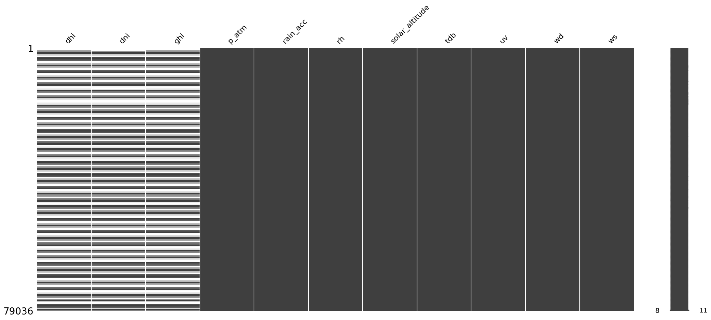

import pandas as pd
import missingno as msno6 Datos de una estación meteorológica
- archivo en formato parquet
- Del 27 de octubre de 2023 al 30 de abril del 2025
- Datos cada 10 minutos
- dhi: diffuse horizontal irradiance
- dni: direct normal irradiance
- ghi: global horizontal irradiance
- p_atm: presión atmosférica
- rain_acc: mm de lluvia
- rh: relative humidity
- solar_altitude: altura solar en grados
- tdb: temperature dry bulb
- uv: ultra violeta
- wd: wind direction
- ws: wind speed
f = '../data/ClimaLab_2023-10-27_2025-04-30.parquet'
tmx = pd.read_parquet(f)
tmx.info()<class 'pandas.core.frame.DataFrame'>
DatetimeIndex: 79036 entries, 2023-10-27 16:40:00 to 2025-04-30 00:00:00
Data columns (total 11 columns):
# Column Non-Null Count Dtype
--- ------ -------------- -----
0 dhi 39186 non-null float64
1 dni 39043 non-null float64
2 ghi 39104 non-null float64
3 p_atm 79036 non-null float64
4 rain_acc 79036 non-null float64
5 rh 79036 non-null float64
6 solar_altitude 79036 non-null float64
7 tdb 79036 non-null float64
8 uv 79036 non-null float64
9 wd 79036 non-null float64
10 ws 79036 non-null float64
dtypes: float64(11)
memory usage: 7.2 MBtmx| variable | dhi | dni | ghi | p_atm | rain_acc | rh | solar_altitude | tdb | uv | wd | ws |
|---|---|---|---|---|---|---|---|---|---|---|---|
| date | |||||||||||
| 2023-10-27 16:40:00 | NaN | 443.2 | 238.0 | 873.2120 | 17.1 | 61.14 | 18.644204 | 28.07 | 0.018 | 226.50 | 1.569 |
| 2023-10-27 16:50:00 | NaN | NaN | 187.5 | 873.2559 | 6.3 | 62.76 | 16.430841 | 27.78 | 0.014 | 171.60 | 1.631 |
| 2023-10-27 17:00:00 | 1360.00 | NaN | 167.5 | 873.2161 | 27.8 | 64.26 | 14.204506 | 28.00 | 0.011 | 314.70 | 0.479 |
| 2023-10-27 17:10:00 | 74.14 | 520.5 | 163.1 | 873.1834 | 5.4 | 66.82 | 11.967374 | 28.69 | 0.009 | 163.60 | 0.504 |
| 2023-10-27 17:20:00 | 67.62 | 269.2 | 126.1 | 873.2775 | 1.5 | 60.92 | 9.722172 | 28.77 | 0.006 | 260.30 | 0.964 |
| ... | ... | ... | ... | ... | ... | ... | ... | ... | ... | ... | ... |
| 2025-04-29 23:20:00 | NaN | NaN | NaN | 861.8378 | 0.0 | 43.17 | -52.087453 | 26.46 | 0.000 | 164.30 | 0.808 |
| 2025-04-29 23:30:00 | NaN | NaN | NaN | 861.8724 | 0.0 | 46.12 | -53.192891 | 26.30 | 0.000 | 337.00 | 0.518 |
| 2025-04-29 23:40:00 | NaN | NaN | NaN | 861.8623 | 0.0 | 46.82 | -54.162933 | 25.57 | 0.000 | 70.61 | 1.358 |
| 2025-04-29 23:50:00 | NaN | NaN | NaN | 861.9176 | 0.0 | 47.47 | -54.986312 | 25.59 | 0.000 | 133.60 | 0.625 |
| 2025-04-30 00:00:00 | NaN | NaN | NaN | 861.9011 | 0.0 | 46.62 | -55.652470 | 25.33 | 0.000 | 155.30 | 1.479 |
79036 rows × 11 columns
msno.matrix(tmx)